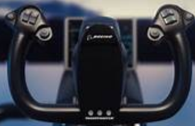

airplane Controls
In this tutorial we are going to learn about Joystick Controls of an aircraft.
The fighter joystick looks like this:

When we are seated inside the aircraft this is located between the legs, after the seat.
So the aircraft goes towards our head side as much as we pull the joystick towards us and the aircraft goes towards our
feet as much as we push the joystick outward from us strightly and
the aircraft rotates anticlock-wise as much as we rotate the joystick anticlock-wise,
the aircraft rotates clock-wise as much as we rotate the joystick to the clock-wise.
This aircraft has another one control called, rudder pedals.
These are located near our foot.
the aircraft turns left as much as we push the left pedal.
the aircraft turns right as much as we push the right pedal.
Go to main menu